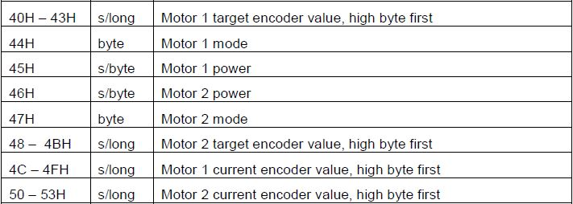

I2C: your new best friend
You essentially get precise motor motion for free.
This is because I2C lets you do PID, no strings attached
You can't get this kind of PID with RobotC.
How does it work?
Through the HiTechnic Motor Controller.
You know, that little black box between your motor and your NXT.

It also requires encoders (important!)
SAAS I2C Libraries - a tour
Embeddable in your projects via git submodules - or plain old copy and paste, if not using git
Layered architecture
I2C.h contains the base API
Motors.h and Servos.h are nice abstractions that work at the layer above I2C.h.
Let's look at the motor API
Standardized format for all functions:
void I2C_FooBar(tSensors port,
int daisychainLevel,
int motorNumber,
sbyte optional)
Variable format
FooBar is the function name. These are generally pretty readable.
port is one of S1, S2, S3, or S4.
Daisychains start at 1, not 0.
optional is a function-specific value (not always used).
Internal methods are prefixed with _. Do not use them.
Making a motor move
#pragma config(Sensor, S4, , sensorI2CCustom)
/* while (true) loop because the motor controller times out
after 2.5 seconds without a command */
while (true)
{
/* set speed of motor 2, daisychain 3 on NXT port 4 to full (100) */
I2C_SetMotorSpeed(S4, 3, 2, 100);
}
Encoder tricks
#pragma config(Sensor, S4, , sensorI2CCustom)
while (true)
{
/* on motor 2, daisychain 1 on NXT port 2, move to encoder position 200 */
I2C_SetEncoderPosition(S2, 1, 2, 200);
}
Moar encoder tricks: let's get fancy
#pragma config(Sensor, S4, , sensorI2CCustom)
while (true)
{
/* set speed of motor 1, daisychain 2 on NXT port 1,
move exactly a half rotation based on encoders */
I2C_SetEncoderPosition(S1, 2, 1,
I2C_GetEncoderPosition(S1, 2, 1) + 520);
}
Debugging
Motors spinning at full speed? Check your encoders.
Motors not spinning at all? Check your ports and power.
Getting "3rd party driver error"? Make sure your port is set to "I2CCustom" in Motors & Sensors Setup.
Anatomy of an I2C write
Every request is an array of bytes: a tByteArray
Byte #1 specifies how many bytes will follow in the request (for a request of length n bytes byte #1 will be n-1). Required.
Byte #2 specifies the address of the I2C device on the bus. Daisychain 1 is 0x02, daisychain 2 is 0x04, etc. Required.
Byte #3 specifies the address on the motor controller register. Required.
Byte #4 and above states the data to write to the register address. At least one required for a write.
Byte #3
A register address is basically a numbered slot in the motor controller that you can put data into
If this still doesn't make sense to you, that's fine
Just know that byte #3 is a magic number that determines what byte #4 means.

Setting motor speed
tByteArray I2Crequest;
/* three bytes of data follow the first byte */
I2Crequest[0] = 3;
/* device address on the I2C bus */
I2Crequest[1] = 0x02 * daisychainLevel;
/* 0x45 is the motor controller register address for motor 1 */
I2Crequest[2] = 0x45;
/* max speed is 100, max byte value is 255, so this will never overflow */
I2Crequest[3] = Speed;
writeI2C(port, I2Crequest);
Doing a read
Just like doing a write, except that you don't pass any data in byte(s) 4+
Instead, you pass (as arguments to writeI2C()) a reference to a variable which data will be stored in
Talk is cheap; show me the code!
tByteArray I2Crequest;
/* this is the memory region that responses will get written to */
tByteArray I2Cresponse;
/* send 2 bytes */
I2Crequest[0] = 2;
/* send to daisychain 1 */
I2Crequest[1] = 0x02;
/* register address that, when read, returns the current encoder position of motor 1 */
I2Crequest[2] = 0x4C;
/* sends the read and writes a 4-byte response into I2Cresponse */
writeI2C(port, I2Crequest, I2Cresponse, 4);
Breaking up the bytes
You can't just send a long or an int
You have to break it up into individual bytes
You do this with bitshifting and masking
I'll skip over these, since they're kind of boring.
Formatting for write
tByteArray I2Crequest2;
I2Crequest2[0] = 6;
I2Crequest2[1] = 0x02 * daisychainLevel;
I2Crequest2[2] = 0x48;
I2Crequest2[3] = (byte)((EncoderPosition >> 24) & 0x000000ff);
I2Crequest2[4] = (byte)((EncoderPosition >> 16) & 0x000000ff);
I2Crequest2[5] = (byte)((EncoderPosition >> 8) & 0x000000ff);
I2Crequest2[6] = (byte)(EncoderPosition & 0x000000ff);
writeI2C(port, I2Crequest2);
Potential gotchas
The order for power and mode is switched for motor 1 and motor 2
daisychain--: this is to do some nice math instead of using an awful switch statement
Contributing
Document our APIs
(We're especially interested in tutorials)
Make Motors.h and Servos.h not use the no timeout bit
Write a testsuite
Use it. File tickets for any bugs, questions or feedback
Contributing (II)
We use the GitHub Flow development methodology
Talk to me afterwards if any of these items interest you.x
Access this presentation again

Thanks!
Questions?
Or just shout it out right now